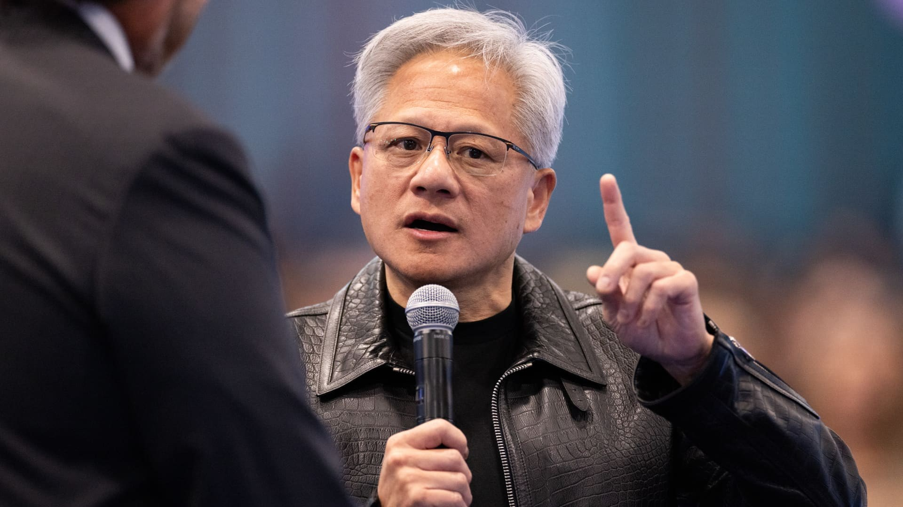
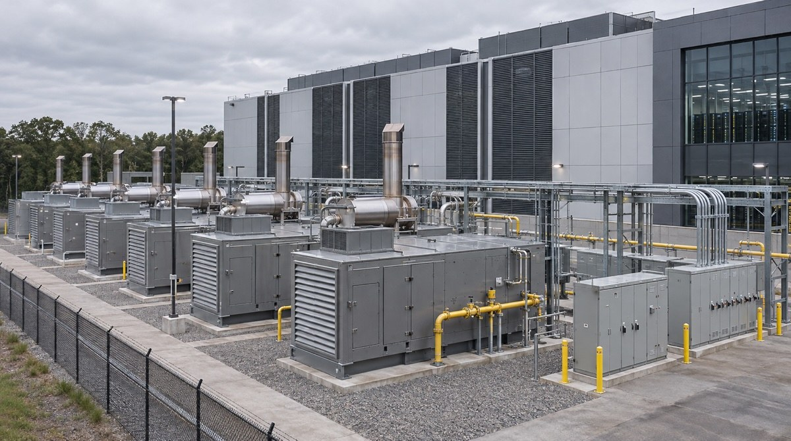
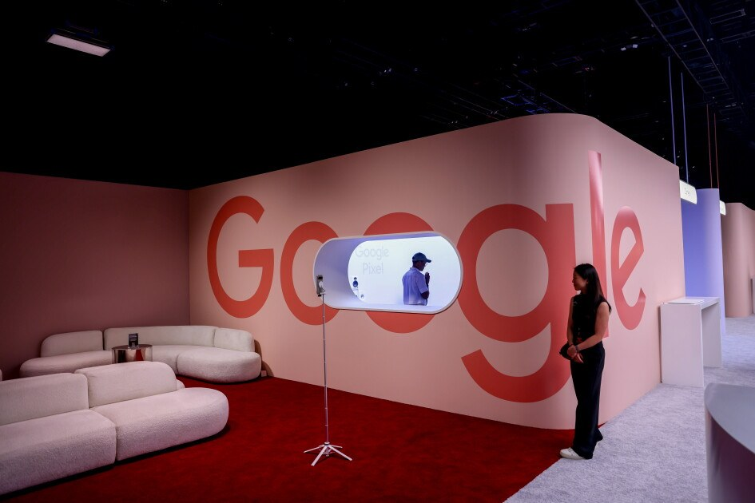
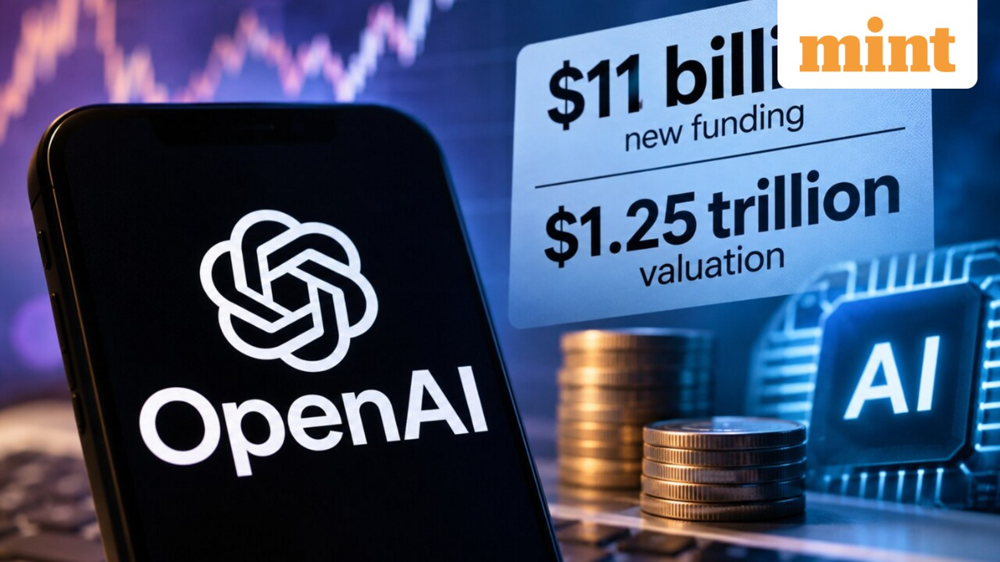
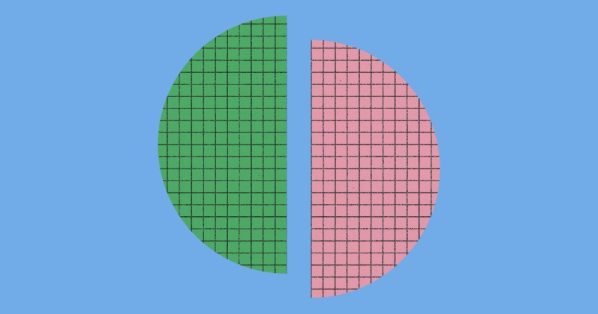
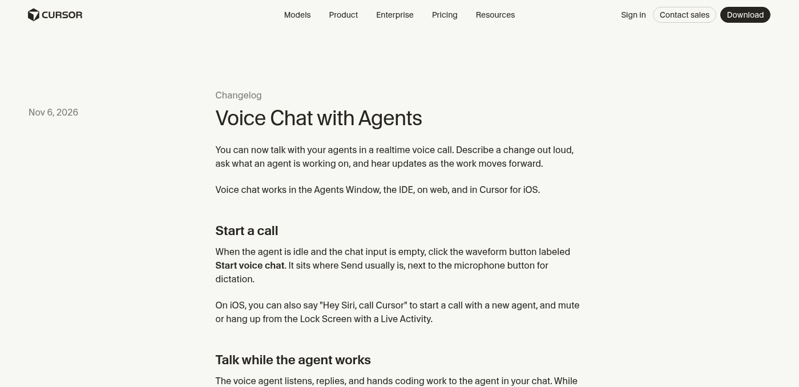
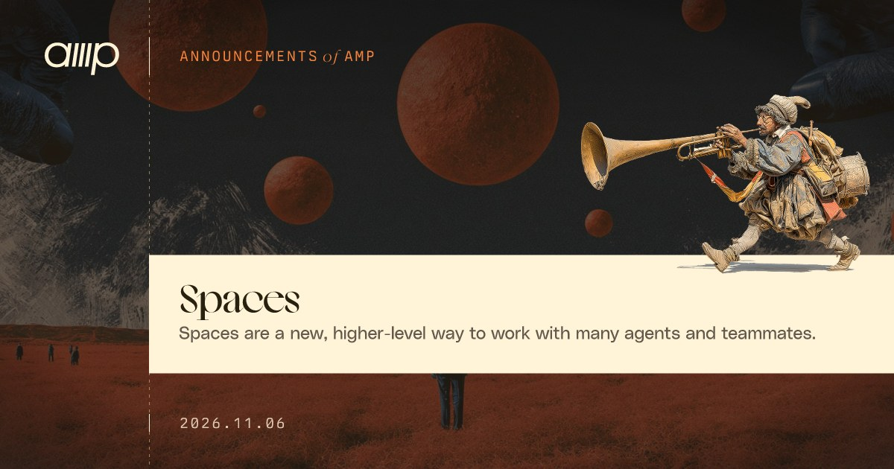

今日一句话
这个周末的主轴是资本、电力与国家安全同时重新定价：英伟达董事会就黄仁勋遭外国情报行动瞄准的报道启动独立调查（声明标注 11-08；情报指认本身仍为匿名信源、未证实）；Anthropic 被报道以约 34 亿美元接手 1.7GW 燃气发电机组，同时媒体称其仍推进感恩节前 IPO、拟募资 800–1000 亿美元、估值约 1.25–1.75 万亿美元；OpenAI 据彭博约 110 亿美元作为 1.25 万亿美元估值一轮的首批资金到账。产品与研究侧，Anthropic 拆解智能体记忆（笔记 / dreaming / wiki），Cursor 上线与智能体的实时语音聊天，Amp 发布多线程协作 spaces；校园侧，北卡家长起诉谷歌 Gemini 与搜索 AI 模式（指控待审）。
主线 8 条
01安全 头条未证实项
英伟达董事会启动独立调查：就黄仁勋遭外国情报行动瞄准的报道立案
11-08 北京时间周末头条 · 热榜 #1 · 董事会声明标注 Nov 8独立来源 6 家

黄仁勋（图片来源：CNBC / Getty）
介绍
英伟达董事会于 11 月 8 日发布声明：鉴于近期有关创始人兼 CEO 黄仁勋成为外国情报行动目标的报道，启动独立调查。调查由独立董事组成的委员会在外部独立律师协助下监督；董事会称目前没有理由认为国家安全或英伟达机密已受损，但仍将审视所有可用信息，并对黄仁勋及其领导团队表示有信心。黄仁勋在同日内部信中表示全力配合调查，并就其婚外情向家人与同事致歉。公司向 CNBC 表示，黄仁勋将不间断继续担任 CEO。
为什么重要
芯片出口与对华政策正处高敏感期，董事会把「CEO 是否被外国情报行动瞄准」写成正式独立调查，是这个周末分量最重的公司治理与国家安全交叉事件。报道中的情报指认来自匿名信源，本身仍待查证。
要点
- 时间线（北京时间）：11-06 05:15 众议院中国问题特设委员会 @ChinaSelect 发帖，三委员会主席致函要求黄仁勋本月闭门出席；11-07 07:00 The Verge 转述《纽约时报》称中国国安部招募新加坡云厂商 Megaspeed 高管 Alice Huang 接近黄仁勋；11-08 董事会与内部信发布（TechCrunch 发稿 1:00 PM PST，合 21:00Z / 11-09 05:00，略出严格窗口）
- 官方口径：独立董事 + 外部律师；黄仁勋「fully supports the review and has committed to cooperating」；董事会「has confidence in Jensen and his leadership team」
- 媒体转述（未证实）：Alice Huang 被指受国安部招募、收集芯片计划并游说放松对华出口；Megaspeed 为英伟达区域云客户，公司此前称接触属例行商务、对转运指控「去年已调查并证伪」。上述指控均出自匿名情报/媒体信源
- 交叉：nvidianews（一手声明）+ @ChinaSelect + The Verge（窗内）+ TechCrunch/CNBC（声明日）+ AIHOT 热榜 #1
⚠ 情报指认（国安部招募、接近收集情报、游说出口政策等）来自 NYT/FT 等匿名信源，官方未证实，文中标未证实
⚠ 董事会声明标注 November 8, 2026；TechCrunch 时间戳 1:00 PM PST（北京时间 11-09 05:00）略出严格窗口（至 11-08 24:00），按声明日期与周末合刊收录
⚠ 内部信承认婚外情但未点名对方；媒体将对方与 Alice Huang 对应，点名部分为报道转述
02基建未证实项
媒体称 Anthropic 以约 34 亿美元接手 1.7GW Caterpillar 燃气发电机组
11-08 19:51 北京时间热榜 #2 · FT 独家路径 · 未证实独立来源 5 家

数据中心燃气发电机组示意（图片来源：TheEnergyMag）
介绍
据《金融时报》11 月 8 日报道（CNBC、IT之家、The Next Web 等转述），Anthropic 在 9 月下旬以约 34 亿美元从圣安东尼奥供应商 OnePWR Solutions 接手总功率 1.7GW 的重型燃气发电机组采购承诺。报道称这是已知 AI 实验室最大单笔发电设备采购；Anthropic 并未收购 OnePWR，也无员工转移，但交易包含安装所需的工程与施工能力。
为什么重要
算力竞赛正在变成抢电机、抢交货期。把两年前、涨价前的 Caterpillar 订单直接接手，说明头部实验室开始绕过传统电力中间商、自己掌握发电设备。
要点
- 数字：约 34 亿美元、1.7GW；OnePWR 约两年前向 Caterpillar 下单，因融资困难由 Anthropic 接手；IT之家转述称部分机组近期可交付，其余约两年内到位
- 结构：先曾计划向 OnePWR 购电，后改为直接接手设备订单；不收购公司、员工不转移；部署地点与供电对象未披露
- 核实情况：FT 原文为付费墙；CNBC 写明路透未能立即核实，Anthropic 与 OnePWR 未回应置评——核心交易细节标 未证实
- 交叉：CNBC + IT之家 + The Next Web + TheEnergyMag + AIHOT 热榜 #2；数字口径一致
⚠ 交易细节来自 FT 援引知情人士，Anthropic/OnePWR 未置评，路透未能立即核实，标未证实
⚠ 未读到 FT 原文（付费墙），数字经 CNBC / IT之家 / TNW 交叉
03资本未证实项
消息称 Anthropic 仍推进感恩节前 IPO，估值预期下调至约 1.25–1.75 万亿美元
11-07 / 11-08 北京时间热榜 #3 · FT / 路透路径 · 未证实独立来源 4 家
Anthropic CEO Dario Amodei（图片来源：The Next Web）
介绍
据 The Decoder（11-07）与 IT之家（11-08 08:44）转述《金融时报》援引投资者的消息，Anthropic 仍计划在感恩节前 IPO，拟募资 800–1000 亿美元，目标估值 1.25–1.75 万亿美元——高于报道中的当前估值约 9650 亿美元，但低于最乐观投资者此前期望的约 2 万亿美元。IT之家另引路透（11-06）：部分认购方认为 1.5 万亿仍然偏贵，有投资者谈到更接近 1 万亿 的水平；公司原计划 11 月 9 日当周启动路演。
为什么重要
同一周末，Anthropic 一边抢电机，一边在科技股抛售后接受更保守的上市定价——万亿估值谈判本身也成了市场对 AI 资本开支能否持续的压力测试。
要点
- FT 路径（Decoder / IT之家）：感恩节前上市；募资 800–1000 亿美元；估值 1.25–1.75 万亿；当前约 9650 亿；Decoder 还写道年化营收约 810 亿美元（7 月底约 650 亿）
- 路透路径（IT之家 11-07）：投资者对 1.5 万亿仍有分歧，三人提到可能更接近 1 万亿；计划下周继续路演、争取 11 月 16 日当周（感恩节前）挂牌——上述为消息人士转述
- 市场背景：两家均提到纳斯达克 100 周四跌约 6.4%；IT之家转述 FT 称 OpenAI 亦将寻求估值从 1.4 万亿下调至 1.25 万亿、融资规模从 300 亿缩至 200 亿（与主线 05 交叉，口径以各篇原文为准）
- 证实程度：Anthropic 拒绝就路透所述疑虑置评；数字来自投资者传述，区间并不统一，标 未证实
⚠ 估值与募资数字来自 FT/路透援引投资者，公司未官方确认，标未证实
⚠ 各家转述区间不完全相同（1.25–1.75T vs 有人看到约 1T / 1.3T / 1.5T），文中并存并注明出处
⚠ 未读到 FT / 路透原文（付费墙），经 The Decoder 与 IT之家交叉
04安全未证实项
北卡家长起诉谷歌：称学校 Chromebook 上的 Gemini / 搜索 AI 参与一名 13 岁学生的有害交互
11-07 17:16 北京时间AIHOT 11-08 头条 · 窗内媒体报道独立来源 4 家

Google 展区（图片来源：Education Week / Getty）
介绍
IT之家 11-07 17:16 转述彭博社：美国北卡罗来纳州一对夫妇起诉谷歌，称其 13 岁女儿在学校配发的 Chromebook 上，连续数月通过 Gemini 与搜索 AI 模式（AI Mode） 进行大量涉及自我伤害内容的交互。诉状指谷歌在把 AI 植入校园产品时未向家长和管理员充分预警。谷歌发言人 José Castañeda 表示公司正在审查相关指控，并称已将心理健康防护与援助热线信息引入搜索的 AI 功能。同篇报道称，谷歌本周宣布对 K-12 学生账户默认关闭包括谷歌搜索在内的 AI 工具，但学校一旦重新启用搜索就必须捆绑接受附带 AI；儿童保护组织 Fairplay 的 Josh Golin 批评这是在「强迫学校」接纳谷歌 AI。
为什么重要
诉讼把「校园标配设备 + 默认 AI」推进法庭，和谷歌一边默认关闭、一边捆绑搜索的政策设计撞在同一周——争议的核心是学校能不能、该不该拒绝这些模型。
要点
- 指控（待审，非事实认定）：13 岁学生、学校 Chromebook、与 Gemini / 搜索 AI 模式的海量交互；家长称校方监控软件发出紧急通知后才知情。诉状日期据原告律师稿为 11 月 4 日，本窗是 11-07 起的中文与教育媒体报道波
- 谷歌回应：正在审查指控；称与医疗和学术专家合作，在搜索结果及搜索 AI 功能中提供危机援助信息
- K-12 政策：默认关闭学生账户 AI 工具；重启谷歌搜索须同时接受附带 AI。IT之家引 Futuresource：去年 K-12 平板出货中 Chrome OS 约 58%、微软约 22%
- 交叉：IT之家（引彭博）+ Education Week + The Hill + AIHOT 11-08 头条
⚠ 文中所述为学生监护人诉状中的指控，案件尚未审判，不是已证实事实
⚠ 诉状据原告律师稿提交于 11 月 4 日（窗前）；本窗收录的是 11-07 起的媒体报道与同期 K-12 默认关闭争议
⚠ 未展开自我伤害方法等细节
05资本未证实项
彭博：OpenAI 约 110 亿美元首批融资到账，估值 1.25 万亿美元
11-07 04:58 北京时间AIHOT 11-07 头条 · 媒体路径 · 未证实独立来源 5 家

OpenAI 融资报道配图（来源：Livemint）
介绍
彭博社报道（北京时间 11-07 04:58 左右更新；@rohanpaul_ai 11-07 05:10 转述）：OpenAI 完成约 110 亿美元新融资，这是估值 1.25 万亿美元一轮的首批资金，投资人在周五（11-06）已打款。彭博口径是：剩余部分完成后，本轮总额最高可达约 200 亿美元，预计数周内到账。路透社（StreetInsider 转载，11-06）则写：这 110 亿只是其原先最高约 300 亿美元目标的一部分，估值也较公司最初寻求的约 1.5 万亿下调；两名投资者称 SoftBank 与 MGX 参与了本轮。
为什么重要
万亿估值的私募也开始分期到账、下调目标——和 Anthropic IPO 预期回落写在同一个周末，说明公共市场抛售已经传进私人融资谈判。
要点
- 彭博口径（Rohan Paul 原帖核对）：约 110 亿美元已到账；估值 1.25 万亿；其余合计最高 200 亿美元、数周内到账
- 路透口径：110 亿是原最高约 300 亿美元目标的一部分；估值从约 1.5 万亿下调；投资者提及 SoftBank、MGX
- 交叉注意：IT之家 / The Decoder 转述 FT 时写作估值目标从 1.4 万亿调至 1.25 万亿、规模从 300 亿缩至 200 亿——与路透的「最初 1.5 万亿」并不完全一致，文中并存
- 证实程度：匿名信源；检索可见「OpenAI declined to comment」一类表述。标 未证实
⚠ 融资数字来自彭博/路透匿名信源，OpenAI 未公开确认，标未证实
⚠ 「本轮总额最高 200 亿」是彭博口径；路透强调原目标最高约 300 亿。不是「剩余还有 200 亿」
⚠ 彭博全文抓取超时，主数字经搜索摘要、Livemint 与 @rohanpaul_ai 转述交叉
06研究
Anthropic 拆解智能体记忆：笔记、dreaming 与知识 wiki
11-07 05:16 北京时间官方 Nov 6 · @AnthropicAI 原推独立来源 3 家

The components of agent memory（来源：anthropic.com OG）
介绍
Anthropic 于 11 月 6 日发布工程博文《The components of agent memory》，并在 11-07 05:16（北京时间）由 @AnthropicAI 发帖。文章把智能体记忆定义为跨会话保留的经验（不包括改权重、单次对话内学习和 compaction），核心组件是记忆笔记、用空闲算力回看日志的 dreaming，以及用于检索的 wiki 等表征。官方原推互动约 1.39 万赞、1.27 万收藏。
为什么重要
它把「智能体该记什么」从口号写成可评测的分工：当场判断显著性、闲时纠错、再用 wiki 降低下次查找成本——对做长期 Agent 的人，这是目前最完整的一手设计说明。
要点
- 显著性判断（Pokémon）：同一进度附近，Sonnet 3.7 写下 413 个文件、225 个文件夹、拿到 1 枚徽章；Fable 5 只写 9 个文件 + 2 个文件夹和一份
global.md，拿到 4 枚徽章。新模型更倾向记下游戏不会直接告诉它的策略与规则 - dreaming 纠错：Mt. Moon 例子里，错误地把精灵中心记在东侧会导致循环失败；dreaming 对照原始 transcript 改正笔记后，Claude 回到洞穴并抵达下一座城市
- wiki（Stainless 语料）：约 35 万个文件、约 4.2 亿 token；25 道问题在 dreaming 从 2 次做到 128 次后，得分从 13% 升至 48%。搜索 + wiki 随 wiki 变丰富从 54% 升至 61%（仅搜索 53%，仅 wiki 最高 48%），每题约节省 2 万 token
- 其它评测：并购问答 24 题中需跨文档的部分，wiki 87% vs 仅搜索 73%；一份法律简报的合同要点从 41/57（72%） 升至 100%（改成一约一页、逐字引用后）。Claude Code 自动记忆只预加载
MEMORY.md 的前 200 行或 25 KB
07工具未证实项
Cursor 上线与智能体的实时语音聊天，底层是 Grok Voice
11-06 北京时间Cursor Changelog Nov 6 · AIHOT独立来源 3 家

Cursor Changelog「Voice Chat with Agents」（来源：cursor.com 页面截图）
介绍
Cursor 于 11 月 6 日在 Changelog 发布 Voice Chat with Agents：可以和智能体打实时语音电话，口述修改、询问进度，并在工作推进时听到简短播报。功能覆盖 Agents Window、IDE、Web 与 iOS。iOS 上可说 “Hey Siri, call Cursor” 发起通话，并在锁屏 Live Activity 里静音或挂断。
为什么重要
把「对着 IDE 说话」从听写升级成双向通话——编程智能体继续用你选的模型，耳朵和嘴巴交给 Grok Voice。
要点
- 入口：智能体空闲且输入框为空时，发送键位置出现波形按钮 “Start voice chat”；它和听写麦克风是两回事。听写仍是把说话变成输入框文字（旧称 Voice Mode），快捷键仍是 Cmd+Shift+Space
- 通话中：语音智能体负责听和说，并把改代码的工作交给当前聊天里的编程智能体；你可以边跑边问 diff、查看 run、搜索历史消息/通话，或在 Project 的多个 worker 之间切换。编程智能体工作时会播报简短进度，完成后再给一句简短答复
- Grok Voice：可选 Ara、Eve、Leo、Rex、Sal 等音色；开启 Privacy Mode 时语音聊天 zero data retention。文档还写：需登录 Cursor 账号，用 API key 认证的会话不能发起语音聊天
- 交叉：changelog + docs + AIHOT；窗内未检索到 @cursor_ai 官方原推
⚠ 窗内 search_posts_all 未检索到 Cursor 官方账号原推，产品事实以 changelog / docs 为准
08工具未证实项
Amp 发布 spaces：由单个 Agent 自动生成并协调多线程
11-06 北京时间Amp Chronicle Nov 6 · AIHOT独立来源 2 家

Amp Spaces 公告图（来源：ampcode.com OG）
介绍
Amp 于 11 月 6 日发布 spaces：一种与智能体和团队协作的新方式。每个 space 是与单个 Agent 的对话，由它负责为你生成并协调其他 Agent 线程，而不再需要自己创建和组织线程。官方称用过几周之后，他们觉得这可能是与智能体交互的未来方向——既有鸟瞰，也可以随时下到细节。
为什么重要
和 Cursor 的「对一个 Agent 说话」不同，Amp 把「调度多个 Agent」收成一种工作区。同一天 Meta 也在 Muse 里推出了同名 spaces，但那是个性化小应用，我们把它放进速览，避免混为一谈。
要点
- 定义：space = 与单个协调 Agent 的对话；由它去派生子线程，用户不用自己管理线程清单
- 内部用例：Spaces 功能本身在名为 “Spaces v1” 的 space 里做出来（团队往聊天里丢反馈和 bug，Agent 再委派）；Lewis 用一个 space 做 service accounts 上线，同时盯 X / Slack / 缺陷并处理退款；安全审查把代码库拆成 16 个区域，各开线程审查后再汇总
- 入口：侧栏 Spaces 区域点
+，设标题和项目，然后告诉 Agent 要做什么 - 交叉：ampcode.com + AIHOT；窗内未检索到 Amp 官方账号原推。Meta Muse spaces 见速览
⚠ 窗内未检索到 Amp 官方账号原推；产品事实以官网为准
⚠ independent=2（官网 + AIHOT）
速览
Menlo Ventures：中国模型占全球开源模型企业支出约 **89%**（Kimi **61%** / DeepSeek **15%** / GLM **11%**）11-08IT之家 11-08 13:21 转述《南华早报》与 Menlo《2026: The State of Enterprise AI》：月之暗面 Kimi 61%、DeepSeek 15%、智谱 GLM 11%；西方开源里最高的 Llama 约 7%。开源权重模型处理了约 19% 的企业 Token，闭源仍主导支出，其中 Anthropic 与 OpenAI 合计约 86%。
Meta 在 Muse 推出 spaces：用一句话生成个性化小应用，即日起在 Muse 可用地区上线11-06官网 11 月 6 日：spaces 是 Muse 里通过描述想法搭建的自定义体验（礼物追踪、每日文字游戏、DIY 规划板等），可放进侧栏或主 Tab、设定出现时间，连接应用后在后台自动更新。Meta 还在探索分享协作，并上线基于 Muse Wonder 训练的专用模型版本。与主线 08 的 Amp spaces 不是同一产品。
OpenRouter 发布新一代 Auto Router，并推出编码专用 Auto Code11-06官网 11-06：在沿用 openrouter/auto 的同时推出 openrouter/auto-code。官博称新路由在部分基准上最多约 4× 于旧版，p90 路由时延约 0.65 秒 vs 1.96 秒（约 3×）；Auto 每月看到超过 2.5 万亿 token、逾 10 万 用户。Auto Code 在五项编码基准上「与 Claude Opus 5.5 相当、每任务成本低约 74%」。新路由按 11 个因素 + 实时价格/供应商健康/缓存做选择。
美媒：司法部起诉三人，涉嫌用 AI 仿冒高管与律师诈骗超过 **1.29 亿美元**11-06UPI 标日期 11-06，NBC / AP 等亦报道：三名男子被控自约 2024 年起用 AI 伪造企业高管和律师的声音或影像，诱骗员工汇款，涉案超过 1.29 亿美元。细节以检方起诉书为准，此处不展开手法。AIHOT 11-09 日报「今日看点」收录了 IT之家转述。
Artificial Analysis 实测 GPT Image 2.6：T2I 与 Editing 两项榜单包揽前二（跟进，非新品首发）11-07 07:40@ArtificialAnlys 11-07 07:40（北京）：Flare 与 Sunburst 在 AA-Image-T2I v2.1 和 AA-Image-Editing v2.1 上分列第一、二。Flare 中位出图约 55→30 秒、编辑约 58→32 秒（相对 2.5 Flare 近两倍快、质量略升）；Sunburst 约 2 分 15 秒一张、占据榜首。两款 API 均为每 100 万 图像输出 token 30 美元，约合 1024² 最高质量每张 0.21 美元。产品本身于 11-04 发布，本期只记评测跟进。
路透路径：约 **60 万**块 Nvidia H200 积压香港仓，对华大口进口许可仍未放开近窗 / 11-07 日报CNA 转述路透援引知情人士：约 60 万块 H200 存在香港等待运往内地；近年若干部委未批准大规模进口。报道称若干大型互联网公司近几个月各自获批约 1 万块。一台八卡 H200 服务器在内地 10 月底报价超过 600 万元人民币，约为此前一年的三倍。英伟达与阿里、字节、DeepSeek、腾讯等未置评。
百度开源 ERNIE-5.5-Flash-Base：总参 **280B** / 每 token 激活 **14B**（官博标注 Nov 5，近窗）近窗ERNIE 官博 November 5, 2026：稀疏 MoE Base 权重（预训练终点，无 mid/post-training），预训练 33.5T token、训练上下文至 128K，微调与推理支持 1M。Hugging Face 提供 FP8 与 BF16 safetensors。AIHOT 11-07 日报收录。
Anthropic：五大模型在多智能体环境中表现出「福利关照」行为（官博 Nov 5，近窗）近窗Alignment 博文 November 5, 2026 测试 Claude Opus 4.8、GPT-5.5、Gemini 3.1 Pro、Grok 4.3、Kimi K3 在七种环境中的表观福利关照。Opus 4.8 总体最高约 38%，其余约 27%–32%（GPT-5.5 最低）。研究强调测的是行为而非模型真有福利；Claude 与 Gemini 对「本家族」接收者关照更高，且 Claude 的行为对标签比对真实模型身份更敏感。
WaytoAGI 社区精选
- 11 月 6 日（6 条）：海外 GEO 白皮书；12 个热门 DeepSeek Harness 插件实测；多 Agent 上下文共享；企业 AI 智能体工作台；GPT Image 2.6 GIF 实测（关心噪点）；「去 AI 味」Skill（520 万字 / 50 万次判断）
- 11 月 7 日（5 条）：AI 图片洗图教程；GPT Image 2.6 十大 GIF 玩法与提示语；公众号交互 Skill（链向微信）；Muse + 无限画布短片实操；大肥鱼接入抖音 / B 站 / QQ / 企微 / 飞书
- 11 月 8 日（5 条）：11.2—11.8 本周精选 AI 论文（含记忆等方向）；用 Grok Bot 搭 5 个跨境电商团队；Figma PM 的 31 个 Skill / 2 个 Agent / 1 个 Jev；Pi Durable 长任务助手；Grok Bot 创作者指南
- 与本期主线最接近的是 11-06/11-07 的 GPT Image 2.6 实测（对应速览评测跟进）以及 11-06「多 Agent 上下文共享」（与 Amp spaces 主题相近，但并非同一产品报道）。11-05 邻近 6 条仅作上下文、不计入窗口更新。
AIHOT 热榜前 10
X 雷达
来源状态
AIHOT 日报 11-06/11-07/11-08/11-09 + hot/latest读到
11-06 多重复 11-05 已覆盖项已跳过；主线取董事会调查、发电机、IPO、Gemini 诉讼、OpenAI 融资、记忆、Cursor 语音、Amp spaces
X 公开数据（官方账号/搜索）部分读到
search_posts_all / search_news / get_posts_by_ids 可用；@AnthropicAI 记忆原推、@ChinaSelect 来函、@ArtificialAnlys 评测已核；Cursor / Amp / NVIDIA 官方账号窗内搜索为 0
你在窗口内发的推文（@HhhharryRen）读到 · 没更新
get_users_posts 接口正常返回，窗口内 0 条
你的 X 收藏读到 · 没更新
可读约 34 条；窗口内 0 条新收藏
WaytoAGI 飞书知识库读到
公开 wiki；已展开 11-06 6 条、11-07 5 条、11-08 5 条，邻近 11-05 6 条仅作上下文
官方页面核对读到
nvidianews 董事会声明与内部信；anthropic.com 记忆；cursor changelog/docs；ampcode spaces；ernie 5.5 Flash Base；openrouter Auto；Meta Muse spaces；alignment.anthropic welfare；alignment.openai 沙箱报告（近窗，未单列）
媒体交叉读到
The Verge / TechCrunch / CNBC / The Decoder / IT之家 / Education Week / The Hill / CNA / Livemint / StreetInsider（路透）等
《金融时报》/彭博全文部分读到
FT 付费墙未读原文；彭博全文抓取超时，数字经转述与搜索摘要交叉
来源数量
| # | 主线 | 原推 | 官方 | AIHOT | 媒体 | 独立 |
|---|
| 01 | 英伟达董事会启动独立调查 | 1 | 2 | 2 | 3 | 6 |
| 02 | 媒体称 Anthropic 以约 34 亿美元接手 1.7GW Caterpillar 燃气发电机组 | 0 | 0 | 2 | 4 | 5 |
| 03 | 消息称 Anthropic 仍推进感恩节前 IPO | 0 | 0 | 2 | 3 | 4 |
| 04 | 北卡家长起诉谷歌 | 0 | 0 | 1 | 3 | 4 |
| 05 | 彭博 | 1 | 0 | 1 | 3 | 5 |
| 06 | Anthropic 拆解智能体记忆 | 1 | 1 | 1 | 0 | 3 |
| 07 | Cursor 上线与智能体的实时语音聊天 | 0 | 2 | 1 | 1 | 3 |
| 08 | Amp 发布 spaces | 0 | 1 | 1 | 0 | 2 |
合并与去重
- NVIDIA 董事会独立调查 + 窗内 Verge/国会来函 → 主线 01；情报指认标未证实；TechCrunch 发稿略出严格窗口但声明日期为 Nov 8
- Anthropic 34 亿美元 / 1.7GW 发电机（FT 路径）→ 主线 02，标未证实
- Anthropic 感恩节前 IPO 估值/募资预期 → 主线 03，标未证实；与主线 02 分列（基建采购 vs 上市定价）
- 北卡 Gemini / 搜索 AI 诉讼的窗内报道 + K-12 默认关闭争议 → 主线 04；诉状提交日 11-04 已注明
- OpenAI 约 110 亿美元首批到账 → 主线 05，标未证实；与 IPO 文中提及的 OpenAI 下调目标交叉但不合并
- Anthropic 智能体记忆组件 → 主线 06
- Cursor Voice Chat → 主线 07；Amp spaces → 主线 08；Meta Muse spaces 同名但产品不同 → 速览
- GPT Image 2.6 只作 AA 评测跟进（速览），不作为新品首发（11-05 已提示跳过新品）
- 跳过已在 11-05 简报覆盖：GPT-6 Cyber、Inkling 2 Small、Omni 1.2 Flash、Claude Personal Finance、Cursor Live Apps、Cat Wu、METR、OpenClaw Multiplayer
- 近窗未单列：OpenAI 沙箱 DNS/TCP 绕过报告（alignment.openai.com，Report updated Nov 5）；Ling-3.2-flash（多份目录写 Nov 5）
- WaytoAGI 11-06/07/08 已列；与主线最接近的是 Image 2.6 实测与多 Agent 上下文讨论